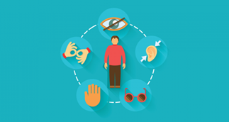
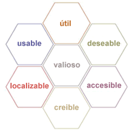

Concepto
La accesibilidad web tiene como objetivo lograr que las páginas web sean utilizables por el máximo número de personas, independientemente de sus conocimientos o capacidades personales e independientemente de las características técnicas del equipo utilizado para acceder a la Web.
Es esencial que la Web sea accesible de cara a facilitar igualdad de acceso y oportunidades a las personas con diferentes habilidades. El acceso a las tecnologías de la información y comunicación está definido como un derecho humano básico en la Convención de las Naciones Unidas sobre los Derechos de las Personas con Discapacidades (UN CRPD).
La Web ofrece la posibilidad sin precedentes de acceso a la información e interacción para muchas personas con discapacidad. Esto significa que las barreras de accesibilidad a material impreso, audio y medios visuales pueden ser más fácilmente superables a través de las tecnologías web.
La Accesibilidad da soporte a la inclusión social tanto a personas con discapacidad como a otras tales como:
- Personas mayores
- Personas en áreas rurales
- Personas en países en desarrollo
También existe un sólido argumento comercial que afirma que el diseño accesible mejora la experiencia y satisfacción de las personas usuarias, en una variedad de situaciones, a través de diferentes dispositivo. Además, la accesibilidad puede mejorar su marca, impulsar la innovación y ampliar su alcance en el mercado, además, es un requisito legal en muchas ocasiones
Limitaciones de acceso a la web
Las limitaciones que pueden impedir el acceso a la información en la Web son las siguientes:
- Deficiencias visuales: Entre las que se encuentran la ceguera, la visión reducida y los problemas en visualización de color.
- Deficiencias auditivas: Estas deficiencias pueden ser consideradas menos limitadoras en el acceso y uso de contenidos digitales, debido a que el canal sonoro es mucho menos utilizado en interfaces web que el canal visual. Aún así, no podemos olvidar limitaciones y barreras derivadas de esta discapacidad, como es el caso del lenguaje.
- Deficiencias motrices: Son las relacionadas con la capacidad de movilidad del usuario. Estos usuarios no suelen ser capaces de interactuar con el sistema a través de dispositivos de entrada tradicionales, por lo que utilizan dispositivos alternativos (Ejem: basados en voz).
- Deficiencias cognitivas y de lenguaje: Son usuarios que presentan problemas en el uso del lenguaje, la lectura, percepción, memoria, salud mental…
El consorcio World Wide Web
En informática, la World Wide Web (WWW) o red informática mundial es un sistema que funciona a través de Internet, por el cual se pueden transmitir diversos tipos de datos a través del Protocolo de Transferencia de Hipertextos o HTTP, que son los enlaces de la página web. Sus características son:
- Es un sistema a través del cual se gestiona información que será compartida por internet.
- Es necesario tener conexión a internet a través de alguna aplicación para poder utilizarlo (Google, Mozilla, Safari, y otros navegadores web)
- Para su creación se emplea lenguaje informático HTML (Hypertext Markup Language)
- Emplea el sistema de Localización Uniforme de Recursos o URL, que es la dirección concreta que determina cada uno de los recursos que se encuentran en la red, es decir, es un identificador propio para cada página, documento, archivo, entre otros, que se encuentran en la web.
Evolucion de la web
La Web 1.0
La web 1.0 es la forma más básica que existe de navegadores de solo texto. Apareció en 1990 y es primitiva en comparación con los recursos que ofrece la web en la actualidad. La web 1.0 únicamente ofrece lectura, por lo que el usuario es básicamente un sujeto pasivo que recibe la información o la pública, sin que existan posibilidades para que se genere la interacción con el contenido de la página. Este tipo de paginas están totalmente limitadas por el webmaster
Esta web primitiva es estática, centralizada, secuencial, de solo lectura, y no es interactiva. Sirve para utilizar el correo electrónico, navegadores, motores de búsqueda, etc. Una página web que se limita a mostrar información y que ni siquiera se actualiza, forma parte de la generación 1.0. En cambio, cuando las páginas ofrecen un nivel considerable de interacción y se actualizan con los aportes de los usuarios, se llaman la web 2.0. Cabe mencionar que lo que diferencia a la web 1.0 y la 2.0 no es el nivel tecnológico en los servidores, es sobre todo, la finalidad de la red, los objetivos y la forma en la que los usuarios perciben y utilizan la información en línea.
La Web 2.0
El término web 2.0 fue acuñado por O’Reilly en 2004 para referirse a una segunda generación de tecnología web basada en comunidades de usuarios y una gama especial de servicios, como las redes sociales, los blogs, los wikis, los chat, foros, álbumes de fotografía, presentaciones en red, etc… Estos fomentan la colaboración y el intercambio ágil de información entre los usuarios de una comunidad o red social.
La web 2.0 posibilita la conexión de personas con persona, redes sociales, wikis, colaboración, con posibilidad de compartir. Es dinámica, interactiva, de lectura y escritura, desarrolla la inteligencia colectiva y favorece el trabajo colaborativo, etc. Se vincula a los servicios que permiten compartir datos e interactuar con gran facilidad. Las redes sociales y las plataformas de colaboración constituyen la base de esta evolución de Internet. El web 2.0 es una actitud ante la comunicación que utiliza la tecnología. Es decir, los sitios web 2.0 actúan como puntos de encuentro de los usuarios, pues son bidireccionales, en contraposición de la web 1.0, que es unidireccional. Con la llegada de la web 2.0, se produjo un fenómeno social que cambió radicalmente la forma de tratar la información y la comunicación.
La Web 3.0
El término web 3.0 apareció por primera vez en 2006 en un artículo de Zeldman, crítico de la web 2.0. Esta web fue operativa desde el 2010. La web 3.0, es un salto tecnológico que tiene importantes consecuencias en los usuarios de la red. Web 3.0, son aplicaciones web conectadas a aplicaciones web, a fin de enriquecer la experiencia de las personas; a esto agrega conocimiento del contexto en la web geoespacial, la autonomía respecto del navegador y la construcción de la web semántica.
La web 3.0 es conocida como la “web semántica” porque utiliza de forma más eficiente de los datos: “data web”. Es inter-operativa y el usuario tiene el control para hacer los cambios que desee modificando directamente las bases de datos. La web semántica incluye metadatos semánticos u ontológicos (que describen los contenidos y las relaciones entre los datos) para que puedan ser rastreados por sistemas de procesamiento. Mientras la web 2.0 está gestionada por el propio usuario humano, la web 3.0 está gestionada en la nube y ejecutada desde cualquier dispositivo con una alto grado de complejidad y personalización; constituye un nuevo tipo de web en la que se añade contenido semántico a los documentos que la forman y ello conlleva que la ejecución de la misma sea realizada por máquinas que, basándose en nuestros perfiles en la red, descubren información relevante para nosotros.
Pautas de Accesibilidad para el Diseño Web
Versión WCAG 1.0
En mayo de 1999 se publicó WCAG 1.0, la primera versión de las pautas de accesibilidad web. La redacción de estas pautas hacía constantemente referencia a tecnologías concretas como HTML o CSS, lo cual se vio al poco tiempo de su publicación que era un problema porque las tecnologías web evolucionaban rápidamente con el tiempo y las pautas se podían quedar obsoletas en un plazo de tiempo corto.
Niveles de prioridad de las pautas WCAG 1.0
Las Pautas de Accesibilidad al Contenido en la Web (WCAG) contienen una serie de prioridades (o niveles de prioridad) que son un conjunto de puntos de verificación que describen cómo aplicar esa pauta a las características propias Cada punto de verificación está asignado a uno de los tres niveles de prioridad establecidos por las pautas, y se indica el grado en que afecta el incumplimiento de dicho punto a la accesibilidad del sitio Web.
- Prioridad 1: son aquellos puntos se tienen que cumplir. Es un requisito básico, ciertos grupos de usuarios no podrán acceder a la información del sitio Web si no se cumple dicha prioridad.
- Prioridad 2: son aquellos puntos que se deberían cumplir ya que, si no fuese así, sería muy difícil acceder a la información para ciertos grupos de usuarios.
- Prioridad 3: son aquellos puntos que se deberían cumplir. De no cumplirse algunos usuarios tendrían dificultades para acceder a la información.
Versión WCAG 2.0
WCAG 2.0 se organiza en varios niveles con el fin de facilitar su comprensión y aplicación: principios generales, pautas generales, criterios de conformidad verificables y una amplia colección de técnicas suficientes, técnicas recomendables y fallos comunes documentados con ejemplos, enlaces a recursos adicionales y código
Niveles de prioridad de las pautas WCAG 2.0
Existen cuatro principios generales que son la base de la accesibilidad web: perceptible, operable, comprensible y robusto. Cada principio se organiza en una serie de pautas, que proporcionan los objetivos básicos que se deben lograr con el fin de crear un contenido más accesible para los usuarios con distintas discapacidades. En total existen doce pautas que a su vez se dividen en 61 criterios de conformidad. Los criterios de conformidad se organizan en tres niveles de conformidad: A (el más bajo), AA y AAA (el más alto). Cuando se cumplen todos los criterios de conformidad de un nivel y del anterior, entonces se puede decir que la página web ha alcanzado ese nivel de conformidad. Los cuatro principios generales son:
- Perceptible: la información y los componentes de la interfaz de usuario deben ser presentados a los usuarios de modo que ellos puedan percibirlos.
- Operable: los componentes de la interfaz de usuario y la navegación deben ser operables.
- Comprensible: la información y el manejo de la interfaz de usuario deben ser comprensibles.
- Robusto: el contenido debe ser suficientemente robusto como para ser interpretado de forma fiable por una amplia variedad de aplicaciones de usuario, incluyendo las ayudas técnicas.
Consejos para crear una Web Accesible
- Asegúrate de que su página web sea compatible con el teclado
- Agrega texto alternativo a las imágenes
- Elegir los colores con cuidado
- Usar encabezados para estructurar tu contenido correctamente
- Diseñar los formularios para que sean accesibles
- No usar tablas para diseñar
- Comprueba que al redimensionar el texto no se rompe la estructura de la página web
- Archivos multimedia